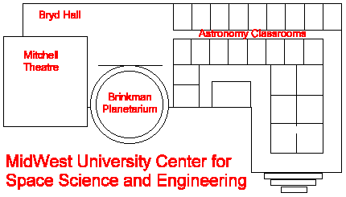

More than 60 exhibits and events await visitors at the Space Expo,
Looking Towards the Future
Friday-Sunday, April 24-26

The Space Expo is an annual, student-run event that showcases recent developments in astronomy and space sciences and demonstrates how these developments can be applied to everyday life. The event includes student, government and industrial exhibits, and features presentations from NASA, Ball Aerospace, Rockwell, and IBM.
The Space Expo will feature activities for the kids, including Creating a Comet, Building a Model Rocket, and The Inter-Galactic Scavenger Hunt. Friday is Students' Day, with school children in grades K-8 displaying astronomy and space science projects and competing for individual and school achievement awards.
Professor Greg Stewart's famous astronomy show is also coming to the Space Expo. Professor Stewart will show the wonders of the night sky and discuss the nature of quasars, exploding stars, and black holes. Presentations will be at the Brinkman Planetarium at 1 p.m. and 3 p.m., Friday through Sunday.
Please check out these other events:
The Space Expo is located on the engineering and physics campus, north of Granger Stadium, and is open to the public on April 24 (Students' Day) from 10 a.m.-5 p.m., April 25 from 9 a.m.-7 p.m. and April 26 from 11 a.m.-5 p.m. Admission is $4.00 for the general public and $3.00 for senior citizens and students. Children four and under will be admitted free.
